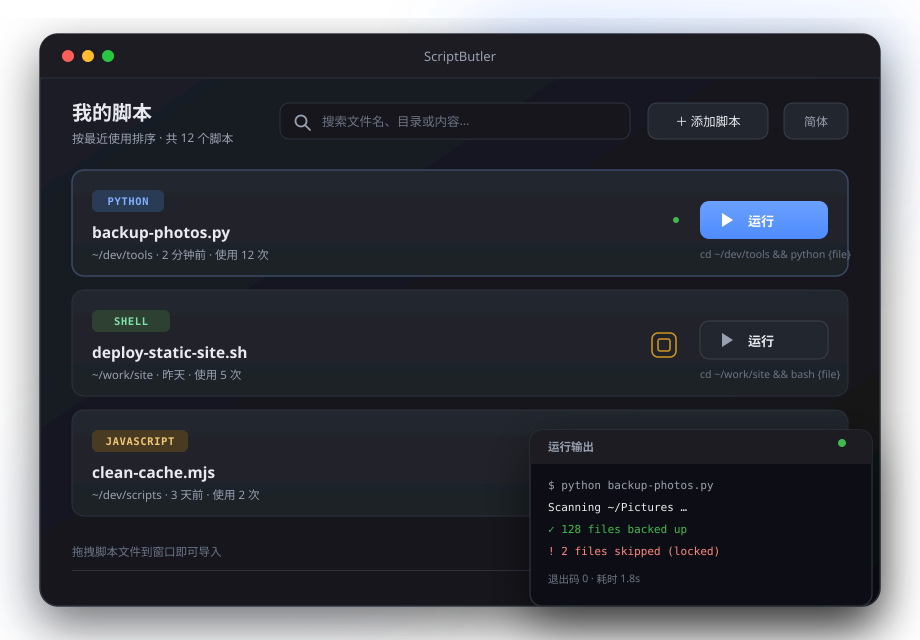

Card-based overview
Scripts are arranged in a single vertical column of cards, showing the language tag, file name, run directory, last used time, and usage count.
ScriptButler is a desktop app for managing local scripts. Keep them organized as cards, drag files in to import, run them with one click, edit with syntax highlighting, and define custom run schemes. The bundled sbctl CLI even lets agents manage and run your scripts.

Import, search, edit, and run — everything happens in one window. No more digging through folders or memorizing commands.
Scripts are arranged in a single vertical column of cards, showing the language tag, file name, run directory, last used time, and usage count.
Click Run on a card to execute the script with the active scheme and open the detail page to watch the output.
Drag script files straight into the window to add cards. Dropping the same file again moves it to the top instead of adding a duplicate.
Results are ranked by file name, then directory, then content. Content search scans on demand, so there is no index to build in advance.
Powered by CodeMirror 6 with automatic language detection for Python, Shell, JavaScript, JSON, YAML, and more, plus keyword completion.
Each script keeps its own run command schemes with a {file} placeholder, a working-directory toggle, and per-run arguments. Changes save instantly.
Streams stdout and stderr in real time with the exit code, highlights errors in red, and supports stopping mid-run and clearing the output.
Script entries and run schemes are stored in a local scripts.json and restored after a restart.
The installer ships sbctl, a command-line tool that operates on the same data as the desktop app, whether the app is running or not.
--json output and meaningful exit codessbctl skill --install$ sbctl add ~/dev/tools/backup-photos.py ✓ Added backup-photos.py $ sbctl list --json { "ok": true, "data": [ ... ] } $ sbctl run backup-photos -- --dry-run Scanning ~/Pictures … ✓ 128 files backed up exit code 0
The desktop app is built with Tauri v2. Business logic lives in a shared Rust core while the frontend focuses on UI rendering.